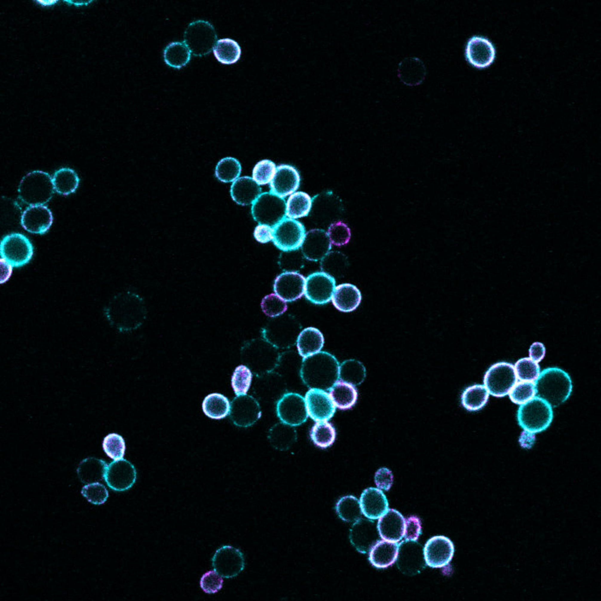

Research
Modeling Pathogen Effector Evolution

Hosts and pathogens are in a never-ending molecular arms race. First, pathogens evolved to steal host resources, then hosts evolved to detect and defend against pathogens. Pathogens evolved ways to circumvent these defenses, then the host evolves more robust defenses. This evolutionary back and forth is commonly referred to as the Red Queen hypothesis, named after the namesake character in Lewis Carroll’s Alice in Wonderland who races Alice but neither of them advance anywhere at all.
We of course see this same dynamic in plants, and for crops, human breeding programs have been continually shoving monocrops forward in this race, making similarly poor progress. What if we could just…win the race? If we did, we would get a roughly 30% boost in crop productivity.
If we assume we can engineer plants to recognize pathogens given its molecular details (ahem… Rim, Garrett, et al., 2024), then all we need to do is predict those molecular details and preemptively engineer recognition in crops. Easier said than done.
Nevertheless, this is what I strive to accomplish in my PhD thesis. Stay tuned for results on bioRxiv.
Engineering Plant Immune Receptors
As mentioned above, in the coevolutionary arms race between crops and their pathogens, humans are pushing crops forward, but never getting ahead of the pathogens. In fact, we can sometimes be years behind them, resulting in devastating losses for the most vulnerable farmers.
Traditionally, we breed resistance into crops. We do that by first screening cultivars and their wild counterparts for disease resistance, then laboriously breed them into our elite cultivars, striving to introduce just the disease resistance genes without negatively impacting yield (which often happens). These efforts have decade-long timelines.
Unfortunately, the threat of crop pathogens is increasing as global trade and climate change expand pathogen range where hosts haven’t evolved resistance. Now more than ever, we need better, faster methods to retool crop immune systems to fight of disease.
In Rim, Garrett et. al (2024), we charted one path forward. Focusing on rice blast, a crop disease destroying enough food each year to feed 60 million people, we used directed evolution to evolve plant immune receptors to detect pathogens that had escaped detection. By recapitulating the interaction in a yeast-based system, we could run directed evolution campaigns at unprecedented scale. This also yielded rich datasets used in Howard, Rim, Garrett, et al. (2025) to train the protein language model ESM2 to predict the recognition capacity of new plant immune receptors. When we have a new immune receptor sequence that can recognize pathogens, we can use gene editing tools to mirror the changes in crops.

To learn more, see the preprints linked above, or take a look at my accessible paper overviews.
Active Learning with Protein Language Models
If you’ve found your way to this page, chances are that you’re familiar with large language models. If you’re at all familiar with how they work, you’ll know they’re notoriously data hungry. For biological prediction tasks, particularly involving proteins, data points may be expensive, prohibitively so if your goal was to train powerful models from scratch. Fortunately, there are plenty of groups out their dedicating enormous amounts of resources to pretraining powerful language models on the protein data that has been collected over several decades, enabling us hybrid wet-dry lab scientists to fine-tune them on the data we can collect. This can drastically improve your model’s predictive performance without breaking the bank.
However, some data are too expensive to acquire even at the scale of fine-tuning, or labs might just not have enough resources to scale their system of interest. In these cases, to feed our hungry models, we need to squeeze the most information out of every data point that we possibly can.
To accomplish this, we must first accept that all datapoints are not created equal, at least not in the context of a dataset. Your model will learn more from some datapoints than others (think about the difference between two mostly identical sequences with very similar phenotypes, not so useful). The art of algorithmically finding these best datapoints with limited information to build the best model with the least data is called active learning.

I’ve been experimenting with active learning systems for fine-tuning protein language models on our directed evolution data. So far, to no avail. Still, if you’d like to see what I’ve tried and what has failed, head over to my Github repo or follow along in my notebook here.